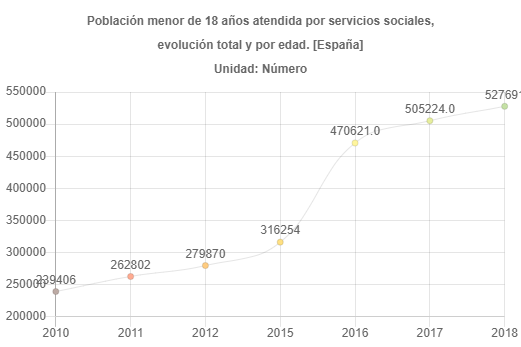
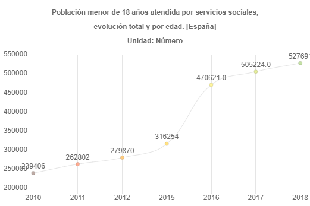

DATOS
34.632 niños, niñas y adolescentes han sido atendidos en 2021 por el sistema de protección a la infancia en España. Aproximadamente la mitad, 16.177, viven en acogimiento residencial.
El número de niños, niñas y adolescentes bajo medidas de protección no ha dejado de crecer desde el año 2010.
 

Fuentes: Observatorio de la Infancia / Ministerio de Derechos Sociales
LA INFANCIA EN ESPAÑA
Los niños y adolescentes son un colectivo caracterizado por una especial vulnerabilidad y que en tanto que sujetos en desarrollo necesitan de terceros que les cuiden, asistan, eduquen y representen.

El niño y la niña, como ciudadanos de derecho que son, requieren una adecuada protección jurídica y administrativa, de forma que se garantice la atención de sus necesidades, el pleno desarrollo de su personalidad y su integración social.
Fuente: Observatorio de la Infancia